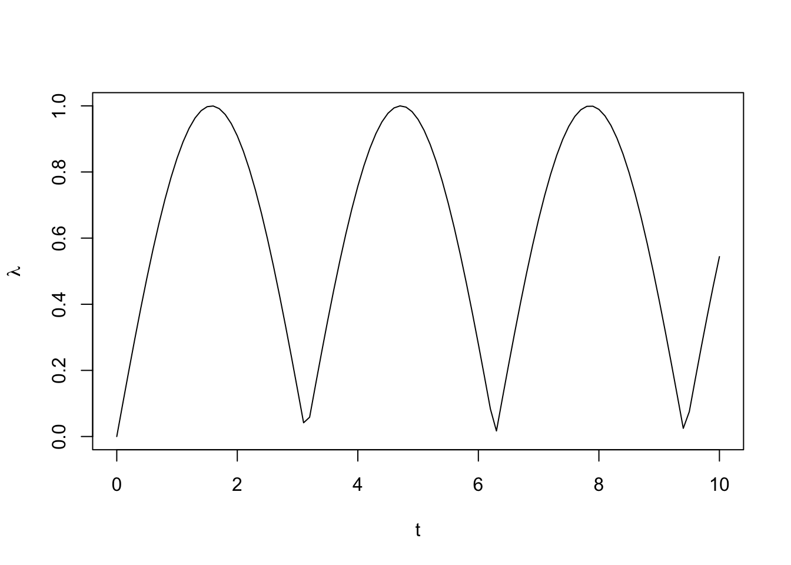
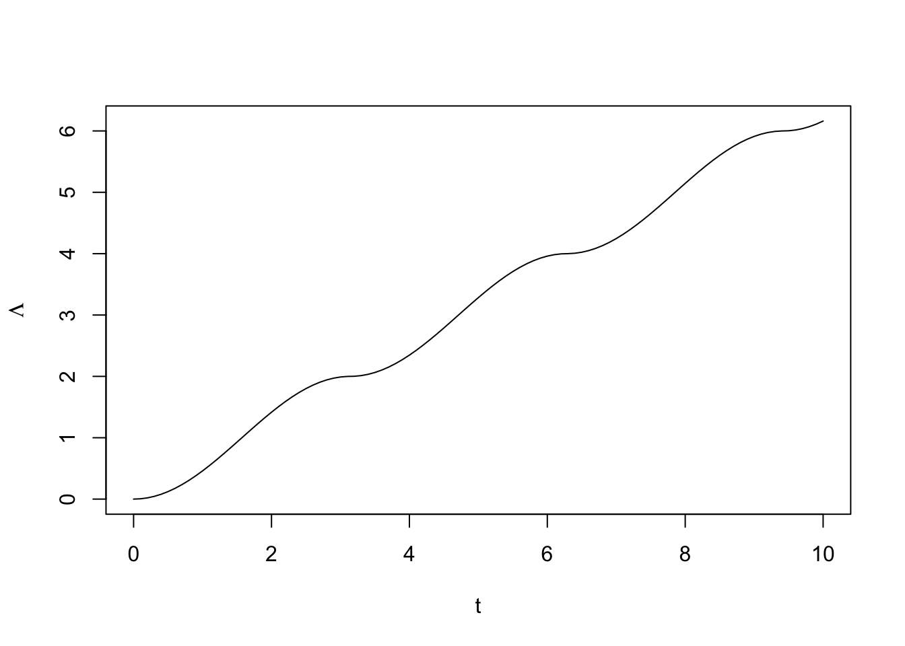
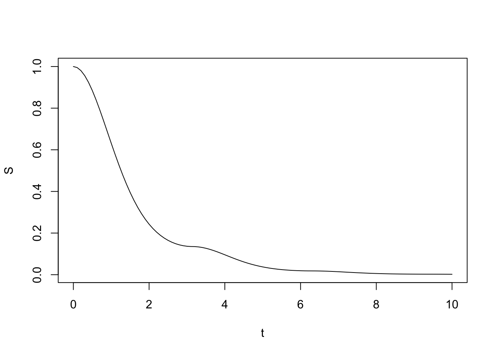
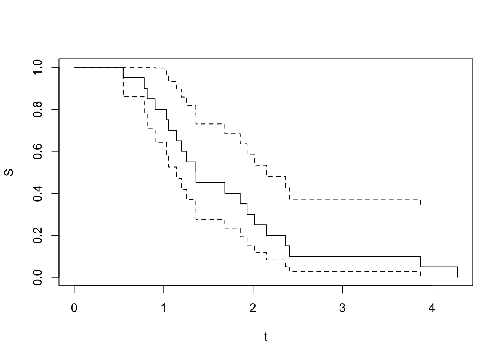

set.seed(1)
library('survival')
# define hazard function:
lambda <- function(t) {
abs(sin(t))
}
# hazard for t = 7 and t = 12:
lambda(c(7, 12)) [1] 0.6569866 0.5365729# plot hazard function:
plot(lambda, from = 0, to = 10, xlab = 't', ylab = expression(lambda))
# define function that computes cumulative hazard function:
Lambda <- Vectorize(
function(t) {
integrate(lambda,
subdivisions = 1e3L,
lower = 0,
upper = t)$value
})
# cumulative hazard for t = 3
Lambda(3) [1] 1.989992# plot cumulative hazard function:
plot(Lambda, from = 0, to = 10, xlab = 't', ylab = expression(Lambda))
# define function that computes survival function
# from cumulative hazard function:
S <- Vectorize(
function(t) {
exp(-Lambda(t))
})
# plot survival function:
plot(S, from = 0, to = 10, xlab = 't')
# determine at which time cumulative hazard
# reaches 2e1 (i. e. S(t) < 1e-8)
# the value is used as upper bound for
# optimization to find the quantile
upper_bound <- optimize(
function(x) {
abs(Lambda(x) - 2e1)
},
interval = c(0, 1e2))$minimum
# define function to compute quantile of survival function
quantile_function <- Vectorize(
function(t) {
optimize(function(x) {
abs(S(x) - t)},
interval = c(0, upper_bound))$min
})
# compute some quantiles for hazard function
# that has been specified above:
quantile_function(c(0.25, 0.5, 0.75))[1] 1.9674130 1.2589101 0.7779829# evaluate how long it takes to determine 10 quantiles:
microbenchmark::microbenchmark(quantile_function(1:10))Warning in microbenchmark::microbenchmark(quantile_function(1:10)): less
accurate nanosecond times to avoid potential integer overflowsUnit: milliseconds
expr min lq mean median uq max
quantile_function(1:10) 10.16788 10.62542 11.70089 10.76422 13.39013 17.73
neval
100# draw n random numbers from survival distribution
# defined by hazard function above
(times <- quantile_function(runif(n = 20))) [1] 0.9040743 1.0566904 2.0173300 1.9328205 0.8170795 1.3620799 2.4072092
[8] 0.7842570 3.8702329 0.5462974 1.0317729 1.1427625 1.6834271 1.3608340
[15] 1.2579906 2.3602768 1.1977742 4.2861974 1.8556640 2.1505993plot(survfit(Surv(times) ~ 1), xlab = 't', ylab = 'S')